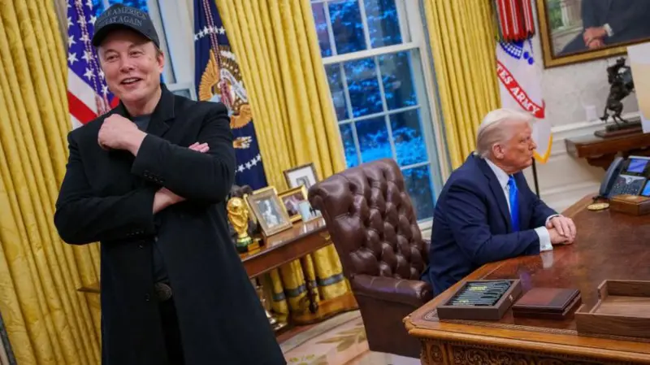

La empresa de criptomonedas Bybit ha sido víctima de lo que podría ser el mayor robo en la historia de los criptoactivos, según expertos y medios especializados.
La condición del papa Francisco se ha deteriorado en las últimas horas y es calificada de "crítica", informó el Vaticano.
Un problema complejo que los microbiólogos tardaron una década en resolver se ha resuelto en tan solo dos días gracias a una nueva herramienta de inteligencia artificial (IA).
Primera escena: Donald Trump asume la presidencia de Estados Unidos rodeado de magnates del sector tecnológico como Elon Musk, Mark Zuckerberg o Jeff Bezos, y con varios millonarios elegidos para ocupar puestos clave de su gobierno.